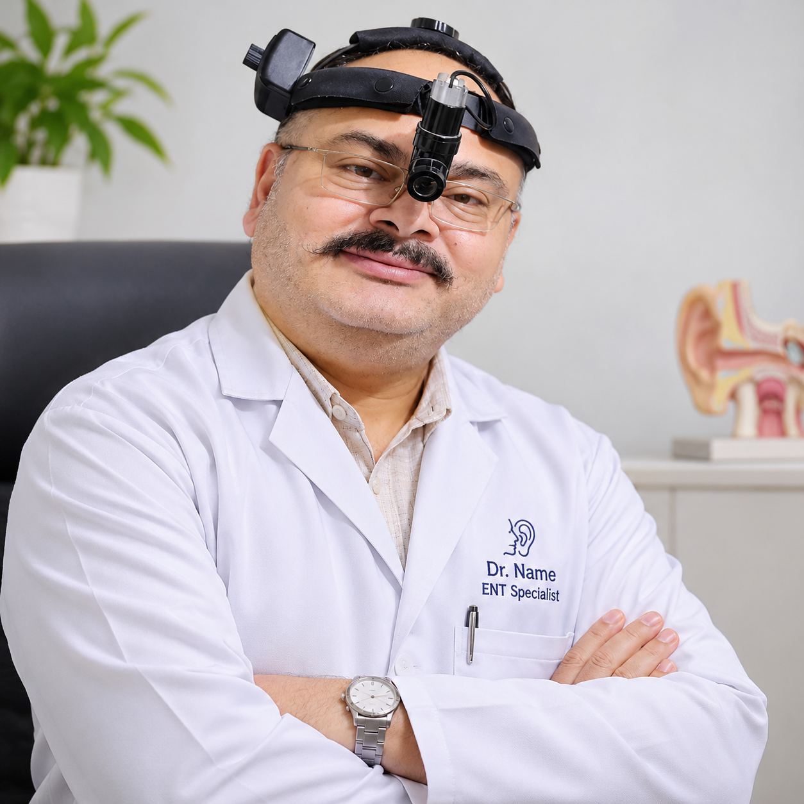

The Art of Hearing.
The Science of Healing.
Better Hearing. Better Breathing. Better Living.
Hanumangarh's premier centre of excellence for advanced microsurgical ear reconstruction, endoscopic sinus surgery (FESS), specialized vertigo & balance clinic, and round-the-clock emergency trauma care.

Dr. Senior Consultant
MBBS, MS (ENT) • Fellow Ear Microsurgery
Reg: Rajasthan Medical Council

Multi-Storey Specialized Microsurgical Facility
10,000+
Successful ENT & Microsurgical Procedures
Serving Hanumangarh & North Rajasthan With Uncompromising Precision
Historically, patients afflicted with complex chronic ear discharges, profound conductive deafness, perforated tympanic membranes, and refractory sinus polyps had to undertake arduous journeys to Bikaner, Jaipur, or Ludhiana.
Minakshi Hospital was founded to bridge this critical healthcare divide. Equipped with operating microscopes, sterile modular operation suites, micro-drill systems, and endoscopic diagnostic columns, we deliver world-class otolaryngology, vertigo management, and emergency trauma solutions right here in Hanumangarh Town.
Comprehensive ENT surgeries performed locally with day-care discharge.
Sub-millimeter illumination and depth perception for delicate middle ear structures.
Senior ENT Consultant & Head of Microsurgery
Pioneering microscopic ear reconstruction, functional endoscopic sinus techniques, and diagnostic vestibular therapy across north-west India.
Senior ENT Surgeon
Chief Consultant & Medical Director
Rajasthan Medical Council Certified Practitioner
Otology & Ear Microsurgery
Expertise in Tympanoplasty, Mastoidectomy for chronic ear discharge, Stapedotomy for otosclerosis, and ossicular chain reconstruction to restore conductive hearing.
Advanced Rhinology & FESS
Endoscopic sinus clearance of polyps, septal deformity rectification (Septoplasty), turbinate reduction, and management of chronic allergic rhinosinusitis.
Laryngology & Pediatric Throat Care
Microlaryngeal surgery for vocal cord polyps & nodules, modern pediatric coblation adenotonsillectomy with minimal post-operative discomfort.
Vertigo & Vestibular Clinic
Dedicated testing for BPPV, labyrinthitis, vestibular migraine, and tinnitus. Performance of targeted canalith repositioning procedures (Epley maneuver).
 OPD Otoscopy
OPD Otoscopy
 Zeiss Microscopy
Zeiss Microscopy
 Modular OT Suite
Modular OT Suite
Specialized Surgical & Diagnostic Procedures
From daycare microscopic eardrum repair to sophisticated endoscopic clearing of deep paranasal sinus networks.
Tympanoplasty & Eardrum Repair
Precision surgical sealing of perforated tympanic membranes using autologous graft tissue under high-power Carl Zeiss microscope magnification.
Endoscopic Sinus Surgery (FESS)
Minimally invasive clearance of recurrent nasal polyposis, chronic frontal and maxillary sinusitis using 0°, 30°, and 70° rigid Hopkins endoscopes.
Septoplasty & Turbinoplasty
Correction of deviated nasal septum (DNS) and hypertrophied inferior turbinates to permanently restore unobstructed nasal airflow and sleep quality.
Tonsillectomy & Coblation Adenoids
Gentle surgical removal of chronically infected tonsils and obstructing adenoids in children suffering from recurrent throat infections and sleep apnea.
Mastoidectomy & Cholesteatoma Care
High-precision eradication of destructive cholesteatoma bone disease to prevent life-threatening intracranial spread and facial nerve complications.
Vertigo, Dizziness & Tinnitus Clinic
Systematic neurological & inner ear vestibular diagnostics to differentiate central vs. peripheral vertigo, followed by particle repositioning therapy.
Sterile Modular OT Suite & Surgical Optics
Minakshi Hospital houses a dedicated positive-pressure modular operation theatre engineered specifically for zero-contamination microsurgery and endoscopic interventions.

Authentic Minakshi Hospital Microsurgical Setup
Carl Zeiss Operative Optics
Coaxial beam illumination with stereoscopic 3D clarity for micron-level grafting in delicate eardrum procedures.
Full-HD Endoscopy Stack
High-definition medical camera console with multi-angle rigid scopes for precision clearance of sinuses without trauma.
Multipara Cardiac Telemetry
Continuous real-time intraoperative haemodynamic tracking, capnography, and precision anaesthesia delivery.
Class-100 Air Purity
Multi-stage micro-filtration with automated autoclave validation ensuring zero post-surgical sepsis.
Your 5-Step Surgical & Recovery Journey
Complete clarity from your first OPD token to full postoperative healing. No hidden steps, complete empathy.
Listening & OPD Token
In-depth clinical interview to understand ear discharge duration, hearing loss, or dizziness frequency.
In-Clinic Diagnostics
Direct video-otoscopy, pure tone audiometry (PTA), or diagnostic nasal endoscopy right in the consultation suite.
Transparent Plan
Clear counseling with family regarding surgery necessity, medication trials, exact estimates, and mediclaim pre-authorization.
Day-Care / OT Care
Surgeries performed under Zeiss microscope or HD tower. Most patients mobilized and discharged on the same or next day.
Healing & Follow-Up
Free postoperative dressing reviews, audiogram verification at 6-8 weeks, and direct doctor helpline for any query.
Real Infrastructure & Clinical Moments
Explore authentic images of our Hanumangarh hospital campus, operating rooms, and doctor consultations.
Multi-Storey Minakshi Hospital, Hanumangarh Town
Senior Consultant Performing Diagnostic Otoscopy
State-of-the-Art Operation Theatre Suite
Carl Zeiss High Magnification Ear Surgery
Stringent Aseptic Surgical Protocols

Pre-Operative Assessment & Nursing Station
Reserve Your Doctor Consultation Slot
Prioritize your OPD consultation and avoid prolonged waiting queues. Fill out the details below and our hospital receptionist will contact you with your allocated token number.
Note: Patients traveling from Ganganagar, Suratgarh, Rawatsar, and Punjab border are advised to confirm token 2 hours prior to arrival.
Patient Registration Details
Please provide accurate patient particulars for digital record generation.
Your entry has been transmitted to Minakshi Hospital Reception. Token details will be dispatched via SMS / WhatsApp promptly.
Frequently Asked Questions
Answers to common queries regarding ENT surgeries, admissions, and emergency visits.
Reaching Minakshi Hospital in Hanumangarh Town
Centrally located with easy arterial road connectivity from Sri Ganganagar, Rawatsar, Pilibanga, and Sangaria.
Near Old Bus Stand / Main Market Link Road, Hanumangarh Town — 335513, Rajasthan, India.
+91 94140 XXXXX / 01552-2XXXXX
Dedicated ramp access with front vehicle reception bay.
Minakshi Hospital Campus
Hanumangarh Town Landmark • Rajasthan 335513